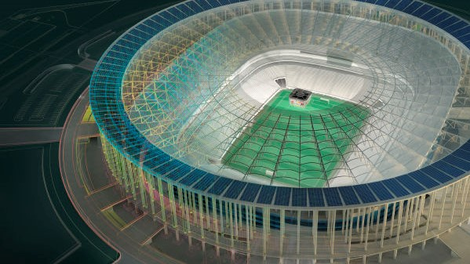
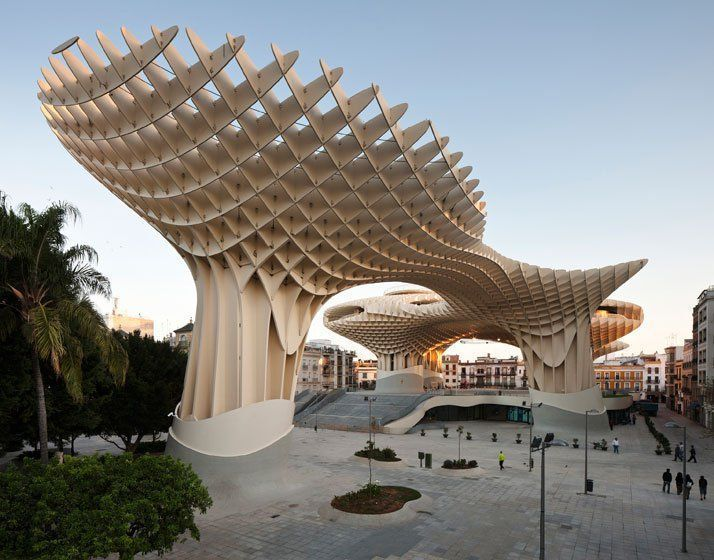
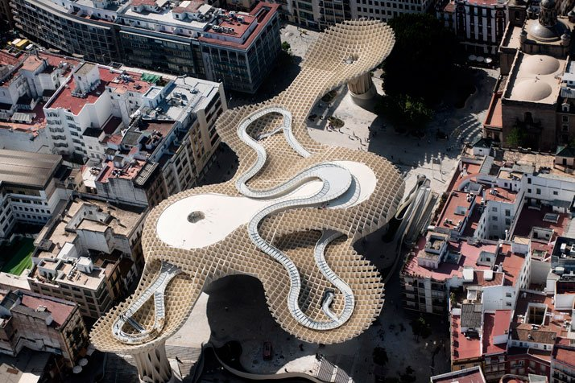

SEMANA 6
BITÁCORA

DISEÑO PARAMETRICO
En esta sesión el profesor nos hablo sobre el entorno en 3D, donde podemos observar paso a paso el flujo de diseño, para obtener un objeto físico.
CAM se utiliza para diseñar y manufacturar prototipos terminados tiradas a una producción.
CAD es un programa donde se elabora todo tipo de diseño 2D y 3D, se utiliza mucho para bocetos, dibujos, planos y estructuras.
CAE consiste en el uso de software para simular el rendimiento con el objetivo de mejorar los diseños de los productos, incluyendo la simulacion y optimizacion de productos.
Otro software que hemos visto es Inkscape, Sculptris y Z brus, que nos ayuda a modificar, hacer texturas, animaciones y elaborar imagenes para ciencia ficción.
¿Que es el diseño parametrico?
El diseño paramétrico es una técnica avanzada de diseño digital que permite introducir una serie de variables o parámetros, como límites espaciales, volúmenes o temperaturas, en un software especializado (Rhinoceros y su plug-in Grasshopper es el más utilizado) para manipularlos mediante algoritmos y obtener así diseños geométricos más complejos, versátiles y originales.
Estos diseños se pueden hacer realidad gracias a herramientas de fabricación digital y tecnología. Sus aplicaciones prácticas abarcan casi cualquier campo de la estética, desde la arquitectura o la ingeniería hasta el interiorismo o incluso la moda. Tanto si estás pensando en renovar el salón de tu casa como en darle un toque exclusivo y vanguardista a tu oficina o restaurante, a continuación destacamos las cuatro ventajas que convierten al diseño paramétrico en la opción estrella para crear espacios versátiles, de formas fluidas y orgánicas. La técnica paramétrica se amolda con mucha facilidad a las condiciones de un espacio o a las necesidades concretas que tenga el usuario final. Obstáculos tradicionales como columnas, esquinas, muros o escaleras ya no interrumpen el espacio, sino que se integran en él de forma armónica. Esta característica resulta particularmente valiosa para reformar interiores de viviendas o locales comerciales, ya que en muchas ocasiones podrás transformar por completo la funcionalidad y estética del lugar sin necesidad de mover un tabique.
Metropol Parasol
Reurbanización de la Plaza de la Encarnación, Sevilla, España Función: Sitio arqueológico, mercado de agricultores, plaza elevada, múltiples bares y restaurantes
Área del sitio: 18,000 metros cuadrados
Área de construcción: 5,000 metros cuadrados
Superficie total: 12,670 metros cuadrados
Número de pisos: 4
Altura del edificio: 28,50 metros
Estructura: Hormigón, madera y acero
Exterior principal: Madera y granito
Material interior principal: Hormigón, granito y acero
Período de diseño: 2004-2005
Período de construcción: 2005-2011
Edificio / Costo: 90 millones de euros